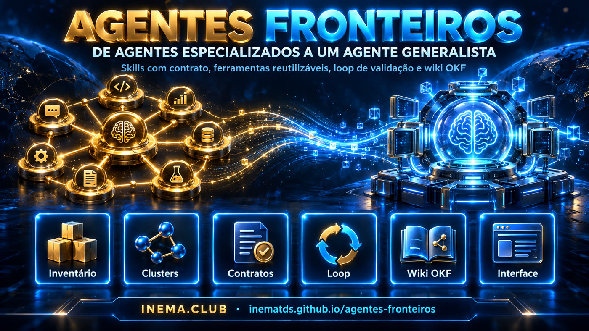
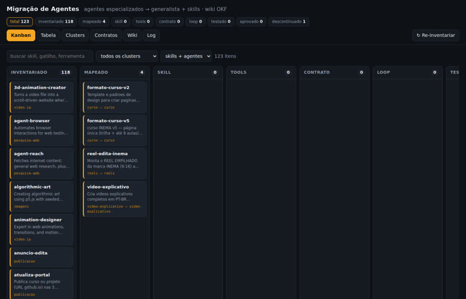
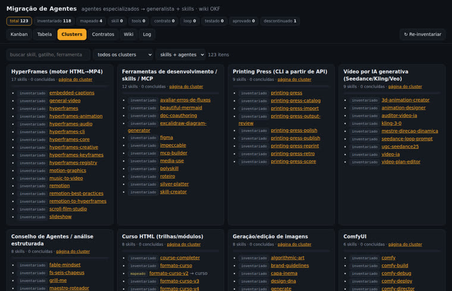
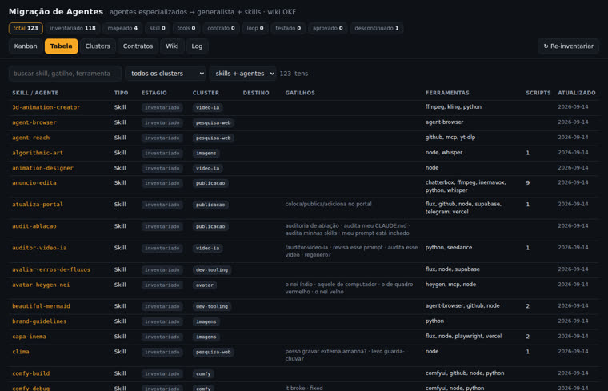

Inventario automático, grupos de superposición, contratos por skill, loop de validación y una wiki OKF mantenida por el propio agente, con interfaz de migración en kanban.

La tesis: no necesitamos crear más agentes. Necesitamos enseñarles a los agentes generales a trabajar a nuestro modo. El repo reúne el plan de migración, el modelo de carpetas de eve (Vercel) y una base de conocimiento en formato OKF mantenida al estilo LLM wiki.
Inventariar → agente base → skills → tools → divulgación progresiva → aprendizaje → loop → contrato → router → sistema vivo. Cada etapa produce algo concreto en el repo.
El agente es un directorio: agent/instructions.md, skills/, tools/, connections/, subagents/, schedules/ e evals/ al lado. Convención, no el runtime TypeScript.
Markdown con frontmatter YAML (type, sources, generated, verified, status). El agente ingiere fuentes en bruto, consolida, indexa y registra en el log. El estado de migración está en el frontmatter.
El inventario recorre las skills y los agentes instalados en Claude Code, genera una página OKF por elemento, los agrupa en conjuntos de superposición y la interfaz sigue cada uno a través de las etapas del plan.
116 skills, 7 agentes, 16 clusters. Cada página incluye activadores, herramientas mencionadas, scripts candidatos a tools/ y el mapa de la etapa 1.
Trigger, input, output, tools permitidas y aceptación verificable. La skill se convierte en una función operativa de la empresa.
Planear → ejecutar → inspeccionar → criticar → corregir → probar. La primera versión es un borrador; máximo de 3 vueltas.
Corregir el sistema, no el resultado: skill, regla, ejemplo o script. Una línea en FALHAS.md y en el wiki/log.md.
Sin framework, sin build, sin base de datos. El servidor de la interfaz usa stdlib; la wiki es texto en git.
Con PyYAML instalado.
# verificar python3 -c "import yaml; print(yaml.__version__)"
El inventario lee lo que está instalado en la máquina.
ls ~/.claude/skills | wc -l ls ~/.claude/agents
O usa la carpeta local del proyecto.
git clone https://github.com/inematds/agentes-fronteiros cd agentes-fronteiros
Tres comandos. El resto es decisión humana en la interfaz y trabajo del agente en las skills.
Recorre las skills y los agentes instalados y escribe una página OKF por elemento en wiki/skills/ e wiki/agentes/, además de los clusters de superposición. Es idempotente y conserva la etapa de migración ya decidida.
python3 tools/inventario.py # skills: 116 agentes: 7 clusters: 16
Falla si un concepto no tiene type, si hay un enlace roto, related inexistente o etapa inválida. Ejecutar antes de hacer commit.
python3 tools/wiki_lint.py # wiki: 149 conceptos · 0 errores
Kanban por etapa, tabla filtrable, grupos con barra de progreso, contratos y lector de la wiki. Haz clic en una tarjeta para abrir el panel y cambiar la etapa, el grupo, el destino y las notas; se guarda directamente en el frontmatter de la página y en el wiki/log.md.
python3 interface/server.py # http://127.0.0.1:8765
Empezar por reels, video-explicativo e curso. El contrato ya está redactado; la skill migrada nace de la plantilla y copia el contrato al lado de SKILL.md.
# contrato y plantilla cat migracao/contratos/reels.yaml mkdir -p agent/skills/reels && cp migracao/template-SKILL.md agent/skills/reels/SKILL.md cp migracao/contratos/reels.yaml agent/skills/reels/contrato.yaml
Cada skill solo pasa a testado después de superar dos tareas de evals/tarefas/, y para aprovado después de un uso real sin correcciones. Si hubo una corrección, una línea en FALHAS.md y el ajuste en la skill.
ls evals/tarefas/ # reels-01.md · video-explicativo-01.md · curso-01.md
La fuente nueva entra en wiki/raw/ con fecha en el nombre y nunca se edita. El agente consolida en conceptos, completa sources e generated, regenera los índices y registra en el log. Las convenciones completas están en wiki/SCHEMA.md.
cp nova-fonte.md wiki/raw/2026-09-20-nova-fonte.md # agente: consolidar → conceptos/ · index.md · log.md python3 tools/wiki_lint.py
Capturas del servidor local justo después del primer inventario, con los tres pilotos ya marcados como mapeados.



El orden sigue la estrategia práctica del plan: primero los pilotos y después los clusters con más superposición.